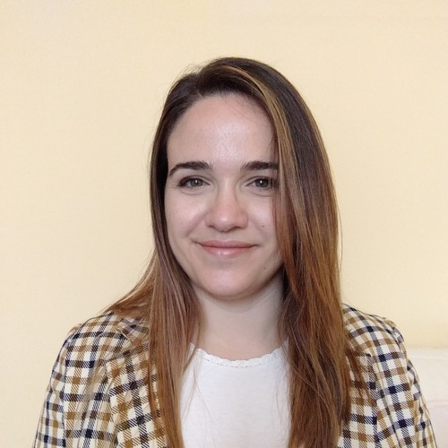

About me

In questa pagina tutta mia vi racconto un po' di me.
Sono una front end developer junior, ho 33 anni e vivo a Prevalle in provincia di Brescia, vicino al bellissimo lago di Garda. Sto affrontando il percorso di studi sulla piattaforma di Start2impact per poter entrare nel mondo del digitale, che è sempre stata la mia passione. Trovo il mondo del coding un mondo affascinante, che ha catturato la mia attenzione già dai primi momenti in cui cominciai a studiare il linguaggio html.
Mi piace fare tanta pratica ed esercizio per accumulare esperienza nel campo dello sviluppo web, per questo motivo sono ben felice di valutare collaborazioni e progetti, anche da altri studenti di s2i. Ho un occhio di riguardo per piccole imprese locali, donne e mamme che vogliono reimmettersi nel mondo del lavoro, start-up che stanno muovendo i primi passi. Al momento ho gia sviluppato un progetto esterno, oltre al mio sito web personale, ma desidero espandere ulteriormente le mi ecapacità.
Potete curiosare tra i miei progetti nella sezione Portfolio.
Sono felicemente mamma di un bimbo dolcissimo, perciò in questi anni ho approfondito molto tutto il settore maternità e baby-care. Mi piacerebbe dedicarmi a qualche progetto in questo settore, anche come supporto alle attività che aiutano e seguono le future/neo mamme. Perchè si sa, non c'è niente di più bello (ma anche faticoso!) di un figlio.
Mi appassiona il giardinaggio e mi piace prendermi cura delle mie piante
Amo la musica di tanti generi diversi, non mi importa molto del testo, voglio solo che sia avvolgente, energica e vibrante. Dalla classica al metal, dalla dance anni '90 alle soundtrack, dalla rilassante al rap... no, il rap proprio no. Per diversi anni ho suonato la tromba nella banda di paese.
Sono appassionata di scrittura e di racconti, soprattutto fantasy: "Il Signore degli Anelli", "Harry Potter", quelle cose li insomma.
Da piccola infatti sognavo di scrivere un mio racconto epico, con tanto di mondi e creature inventate da me! Per ora mi cimento solo in stesure di testi amatoriali, ma magari in futuro...
Sono anche una disegnatrice provetta, i miei soggetti preferiti erano spesso i personaggi dei cartoni animati, perciò vai di pokemon e simili!
Amo la risata, quella intelligente e leggera, che può migliorarti la giornata: al cinema con gli amici o al lavoro coi colleghi.